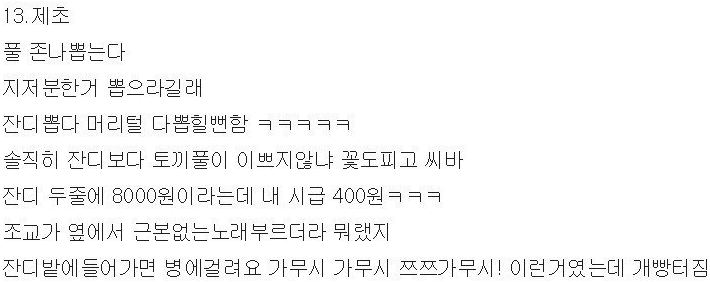
가무시 가무시 쯔쯔가무시!
군생활 하다보면 본인의 의지와 다르게 벌레와 매우 친해지게 됨.
거지 같은 아디다스 모기와 진드기 등이 대표적임
군은 해충으로 인한 비전투손실을 줄이기 위해 방역 작업 및 전방 및 일부 지역의 경우엔 말라리아 접종을 하는 등 대비하고 있음
좀 더 효과적인 방법은 없을까?
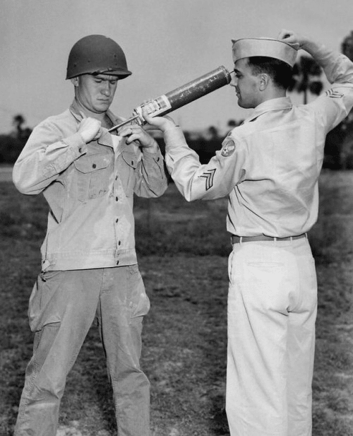
'옛날처럼 사람한테 뿌리죠?'
물론 이 방법도 쓴다!
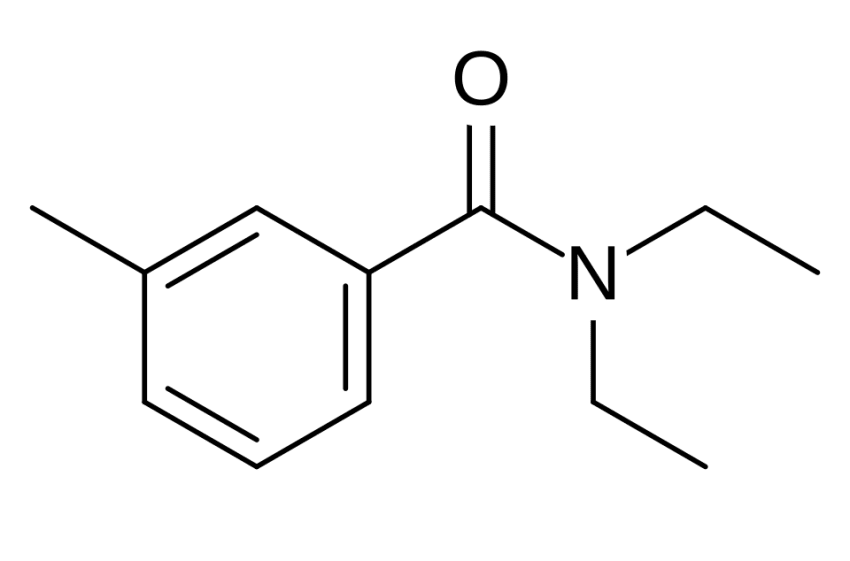
DEET라는 피부에 뿌리도록 설계된 성분이 있다!
물론 살충제는 아닌 해충 기피제지만.
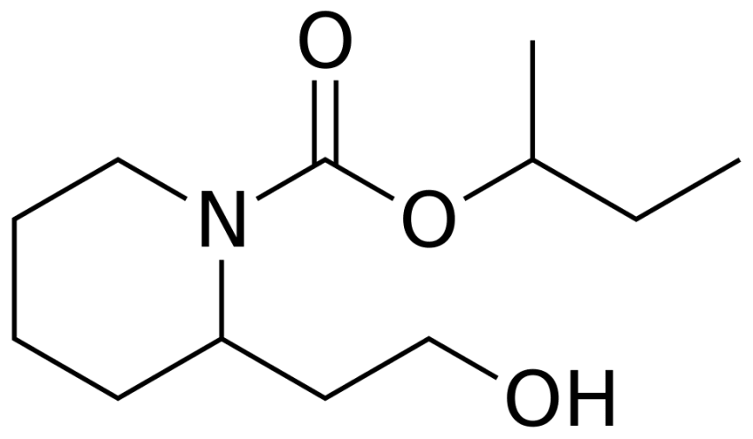
이거 외에 피카리딘이라는 성분도 존재함.
둘 다 CDC에서 말라리아 예방하기 위한 메뉴얼 중 하나로 사용하길 권장하는 성분이기도 함.
2005년에 작성된 미 육군 예방의학센터에서 만든 교범을 보면 여러가지 방법을 알려주는데
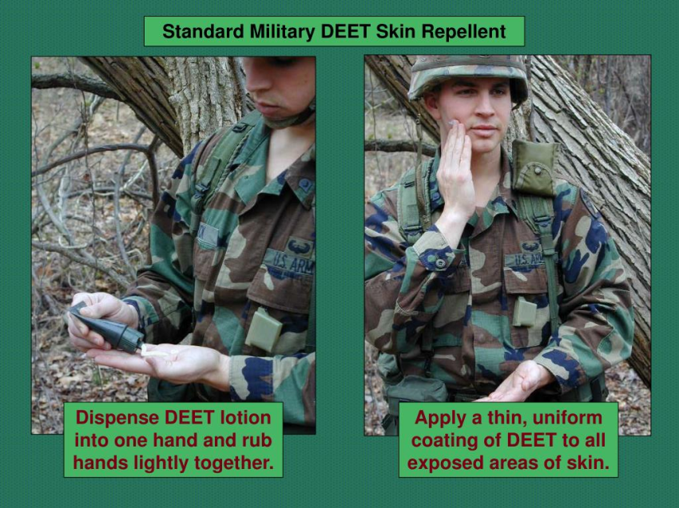
DEET 로션을 꺼낸다. 잘 바른다
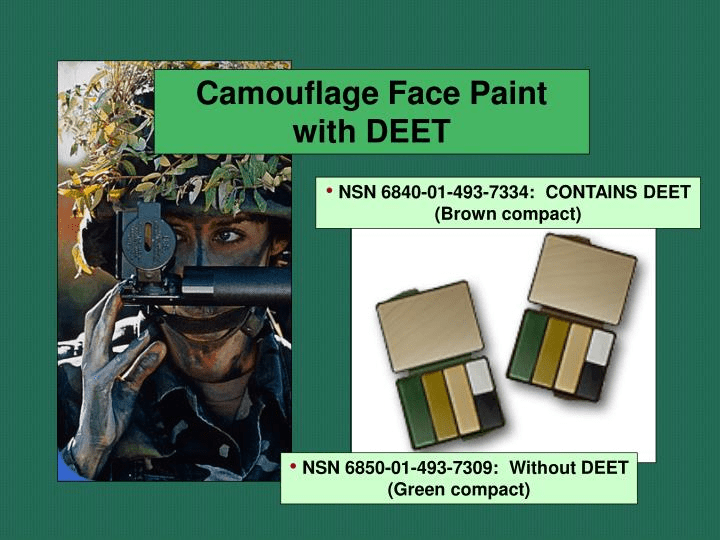
위장을 할 때는 DEET가 포함된 위장 크림을 바르고
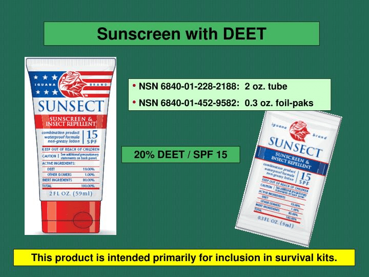
심지어 선크림도 있음ㅋㅋ
물론 이것만으로는 조금 부족함.
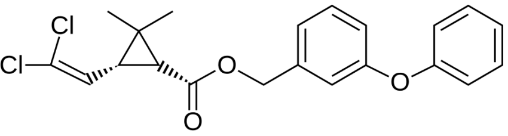
이를 위해서 나온 것이 퍼메트린!
옴 치료를 위해 피부에 바르기도 하고 심지어 모기장이나 군복에도 처리를 해서 보급함!!
살충제긴 하니 피부에 자극이 완전 없는건 아님
어떻게 처리하느냐??
특허공보를 살펴보자
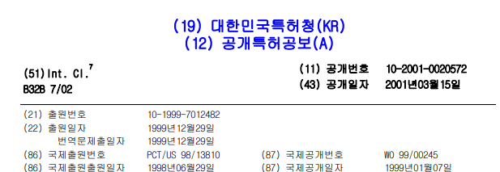
1996년 5월에 작성된 특허임
크게 8가지 방법이 있는데
1. 개인 다이나믹 흡수 적용(IDAA) 키트.
2. 2 갤런 필드 스프레이어.
3. 에어로졸 스프레이 캔.
4. 에어로졸 핸드 헬드 스프레이어.
5. 32 갤런 캔/필드 임머젼.
6. 필드 세탁장.
7. 패드 롤.
8. 핫 다이 배쓰.
첫 6가지 방법은 야전이나 부대 자체에서 하는 방법임.
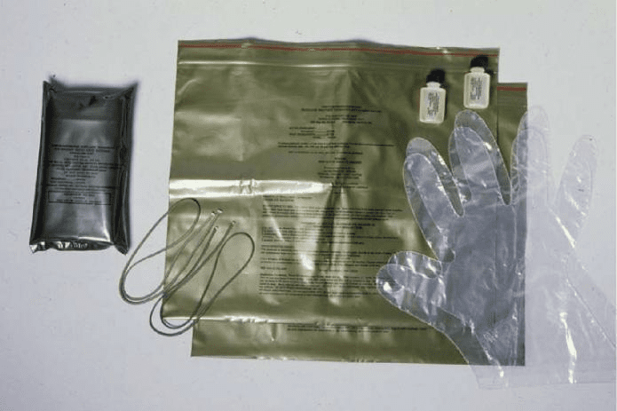
이런 키트를 이용해서 전투복 및 필요한 장비에 처리하는 법임
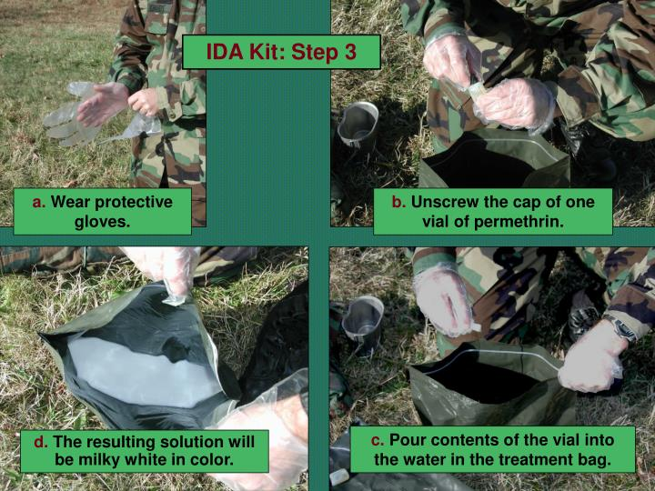
대충 설명하자면 장갑 끼고, 물이랑 약을 섞음
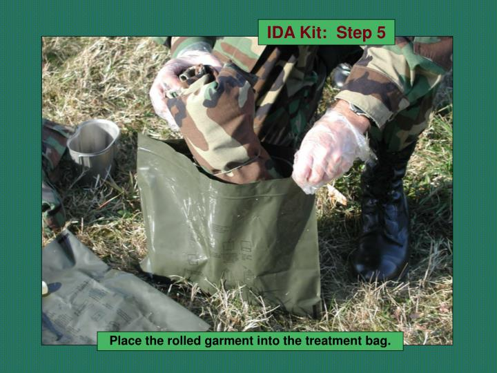
돌돌 말아둔 군복을 넣고
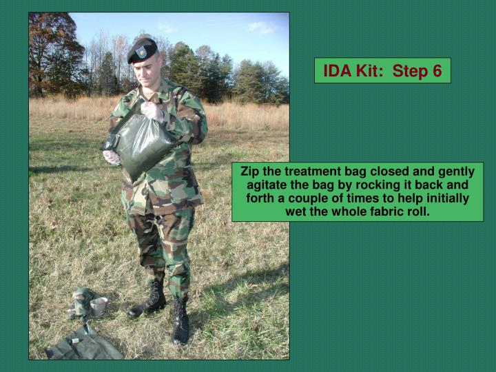
흔듬
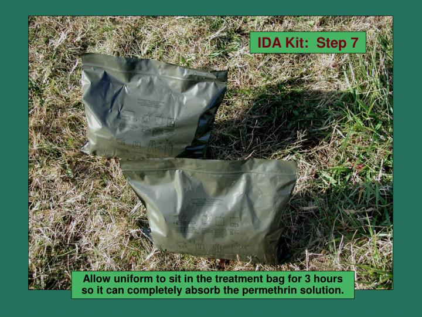
그리고 약품이 스며들게 3시간 동안 묵혀둠
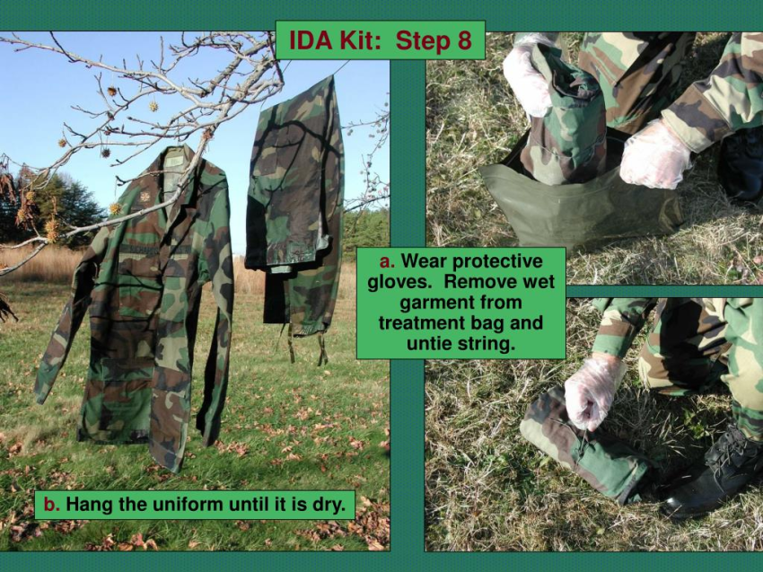
처리해둔 전투복을 꺼내고 잘 말린 뒤에
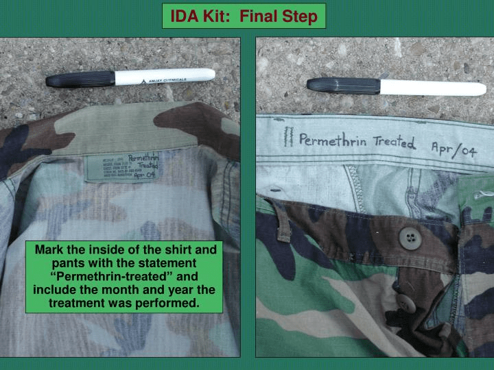
약품 처리 했다는 표식을 남기면 끝!
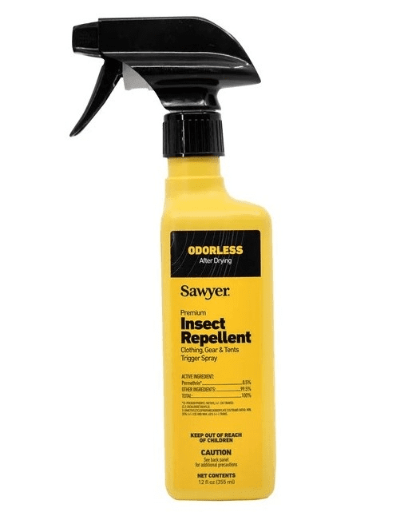
분무 스프레이식도 있는데
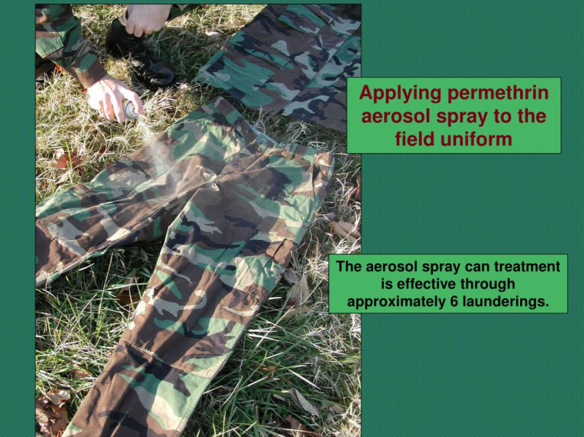
얘는 걍 잘 뿌리면 됨
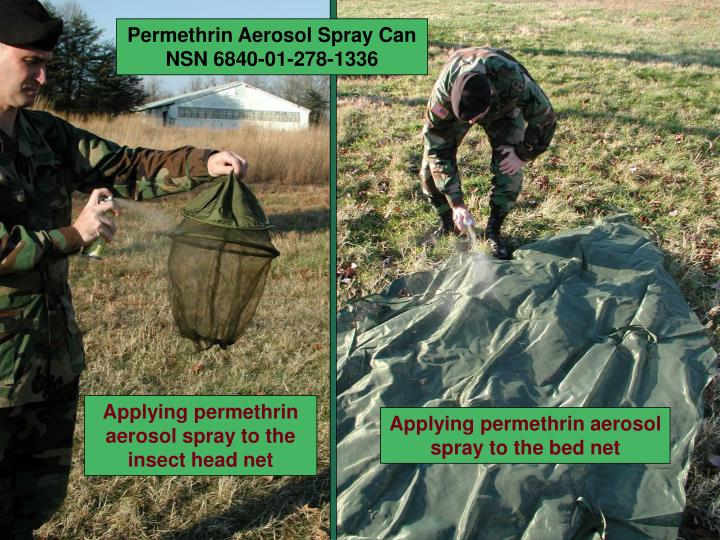
모기장에도 잘 뿌려주기!
여기까지가 야전에서 하는 방법이고 보급품 제작부터 처리하는 방법도 있음.
기존에는 전투복에 퍼메트린을 처리하고 압착 롤러로 잔여 용액을 빼고 건조하는 방식이었음.
이 방법은 제조하는 노동자가 살충제에 장기간 노출될 우려나 원단을 미리 처리해야하는 등 단점이 있었음
특허 기술은 세탁기에 퍼메트린 탱크를 연결 -> 세탁 후 용액 처리 -> 회전식 건조기로 원심탈수로 용액을 회수 후 재사용하는 식
이렇게 처리한 뒤에
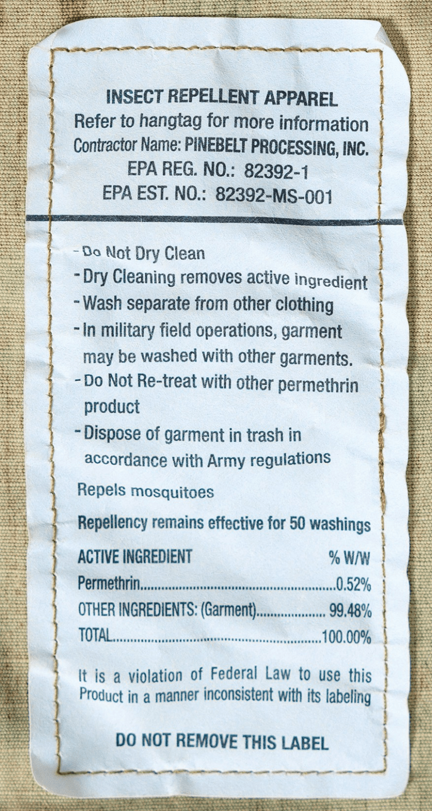
퍼메트린 용액 처리를 했다는 태그를 붙이면 끝!
최대 50회까지는 세탁을 해도 해충 방어 효과가 유지된다고 함.
대신 건조기나 드라이클리닝은 금지함. 또한 추가로 퍼메트린을 뿌리는 것도 금지!
국군도 이러한 방식을 사용하는지 알아봤는데
해충기피제 사용 시 전투복의 기능성에 영향을 미치는지 테스트한 기사는 있는데
따로 원단에 약품 처리한다는 근거는 못찾음..... 찾은 사람 있으면 알려주세요
요약
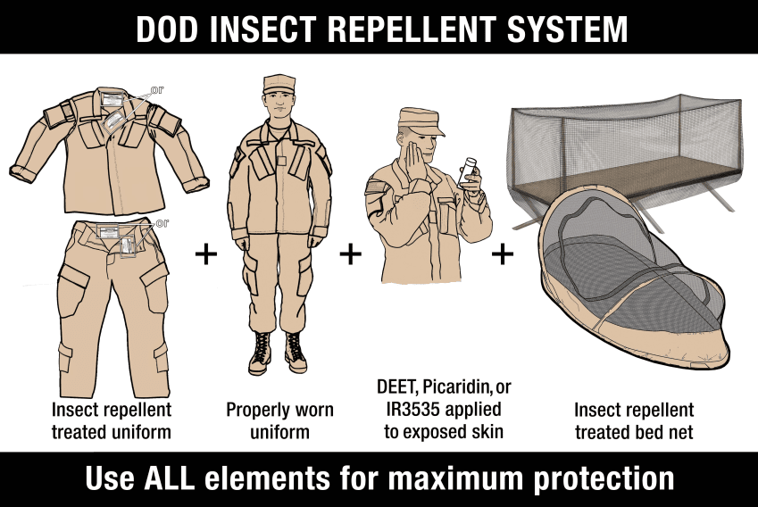
1단계로 퍼메트린 처리가 된 전투복을 착용하기
2단계로 피부 노출 최소화
3단계로 노출된 피부엔 기피제 사용하기
4단계로 잘 때는 퍼메트린 처리된 모기장을 사용하기
출처
미국 육군 건강증진 및 예방의학센터 곤충학 프로그램, 애버딘 시험장, 메릴랜드 21010-5403, 2005년 4월 1일. 군사적으로 중요한 곤충 및 기타 절지동물에 대한 개인 보호 조치(PPM).
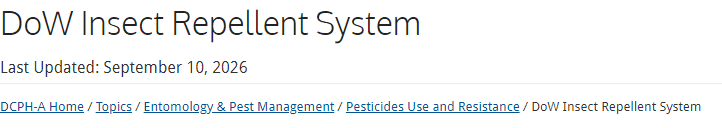
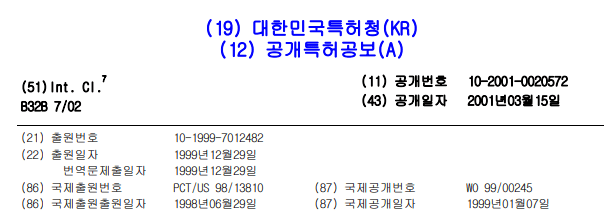
댓글
수집 당시 댓글 55개
파딱이협박해서가입함 · 11.11 21:04:02
· 코코볼코코몽 · 11.11 21:05:59
· A306R · 11.11 21:08:28
· 파딱이협박해서가입함 · 11.11 21:09:32
· 코코볼코코몽 · 11.11 21:11:32
ㅇㅇ · 11.11 21:07:12
· 코코볼코코몽 · 11.11 21:11:43
오줌기타 · 11.11 21:09:20
· 오줌기타 · 11.11 21:10:04
· 코코볼코코몽 · 11.11 21:12:07
· 오줌기타 · 11.11 21:16:18
Zui · 11.11 22:15:01
패튼2077년현역기원 · 11.11 22:17:09
xwing · 11.11 22:29:54
ㅇㅇ · 11.11 22:34:51
· ㅇㅇ · 11.12 11:49:31
· ㅇㅇ · 11.12 13:03:12
· ㅇㅇ · 11.12 13:03:48
· ㅇㅇ · 11.13 08:53:40
· ㅇㅇ · 11.13 14:06:15
밥쥐 · 11.11 23:04:00
DSE · 11.11 23:54:26
KOR0522-Petrus · 11.12 08:55:28
라스캐논 · 11.12 09:27:25
ㅇㄹ · 11.12 09:35:05
ㅇㅇ · 11.12 09:59:18
· ㅇㅇ · 11.13 09:05:54
· ㅇㅇ · 11.13 09:07:54
ㅇㅇ · 11.12 11:49:12
ㅇㅇ · 11.12 23:40:56
ㅇㅇ · 11.13 08:27:58
ㅇㅇ · 11.13 08:30:28
ㅇㅇ · 11.13 08:49:08
· ㅇㅇ · 11.13 08:55:37
· ㅇㅇ · 11.13 09:26:16
· ㅇㅇ · 11.13 09:36:47
· ㅇㅇ · 11.13 09:53:50
· ㅇㅇ · 11.13 10:14:04
· ㅇㅇ · 11.13 11:22:11
ㅇㅇ · 11.13 08:50:24
· ㅇㅇ · 11.13 09:02:31
· ㅇㅇ · 11.13 09:30:08
ㅇㅇ · 11.13 09:06:22
ㅇㅇ · 11.13 09:44:40
ㅇㅇ · 11.13 10:08:10
ㅇㅇ · 11.13 13:23:04
ㅇㅇ · 11.13 13:32:43
ㅇㅇ · 11.13 13:36:12
ㅇㅇ · 11.13 14:03:44
펜도르 · 11.13 15:11:45
삭제됨 · 11.13 15:30:26
· ㅇㅇ · 11.13 16:27:56
ㅇㅇ · 11.13 16:52:39
ㅇㅇ · 11.13 18:58:58
ㅇㅇ · 11.13 19:27:28